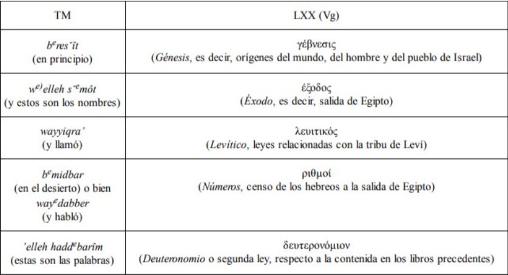

Principios narrativos del pentateuco
(Historiografico/ideologico)
La Historia de Dios con El Pueblo de Israel
La narración es una forma de presentar relatos estructurados de uno o
más
sucesos, que se ha utilizado desde la antigüedad y está presente en casi todas las
culturas; El objetivo de un relato narrativo es contar secuencialmente distintos eventos
con sus implicaciones y presentarlos desde la perspectiva del escritor; La definición
de narración que proporciona la reconocida Filóloga Argentina Graciela Reyes,
afirma que:
“Es la forma discursiva que (…),
refleja la organización humana de la
humanidad, su significado, el sistema de valores en que se asienta ese
significado.
Contar es poner orden y lugar, ya sea a actos humanos, ya sea a
acontecimientos
naturales, ya sea a las abstracciones del pensamiento (…)” (Polifonía
textual: la
citación en el relato literario 1984).
Para el pueblo de Israel, los relatos
históricos tenían una importancia mayor,
puesto que las narraciones no eran simples crónicas de sucesos en el
tiempo, sino que
su historia era su lugar de encuentro con su Dios (Sicre, 2000);
iniciando desde los
patriarcas, pasando por su travesía en el desierto, e incluso, saltando
hasta la historia
deuteronomista, cada experiencia con Dios se había convertido en el
fundamento de la
fe judía; porque Dios se había revelado a Israel mostrando su naturaleza
y su ley a
través del tiempo.
Por ejemplo, los Israelitas de
los tiempos del Éxodo, conocieron que
Dios era
todopoderoso porque le vieron en acción al sacarles con mano poderosa de
la tierra de
Egipto, y esta revelación acerca de Dios perduro porque fue transmitida
a las
siguientes generaciones, como dice la escritura:
“Entonces dirás a tu
hijo: Nosotros éramos siervos de Faraón en Egipto, y
Jehová nos sacó de Egipto con mano poderosa. Jehová hizo señales y
milagros
grandes y terribles en Egipto, sobre Faraón y sobre toda su casa,
delante de nuestros
ojos; y nos sacó de allá, para traernos y darnos la tierra que juró
a nuestros padres.
Y nos mandó Jehová que cumplamos todos estos estatutos, y que
temamos a Jehová
nuestro Dios, para que nos vaya bien todos los días, y para que nos
conserve la vida,
como hasta hoy.” Deuteronomio 6:21-24 RVR1960
El Pentateuco, El fundamento de la Fe Judía
Distintos eruditos han discutido acerca de esta
clasificación de libros en el
Antiguo testamento, unos han argumentado la existencia del “Hexateuco” por la
continuidad teológica y literaria de los cinco primeros libros con el libro de Josué,
otros afirman que se trata de un Tetrateuco al afirmar un nuevo inicio separado de los
demás libros en Deuteronomio; También se ha dicho de la existencia de un
Enneateuco, argumentando una cohesión literaria desde Génesis hasta 2 Libro de
Reyes. (Tabet, 2004)
Sin embargo, la tradición judía le dio preeminencia a
Génesis, Éxodo,
Levítico, Números y Deuteronomio como una unidad teológico-literaria fundamental
para el pueblo de Israel debido a la presencia de los patriarcas, la figura de
Moisés
como libertador, mediador para el pueblo e intérprete de la ley, y el contenido
legislativo y sacerdotal en los libros del pentateuco, el cual Miguel Ángel
Tabet
denota como “corpus legislativum”.En otras palabras, el pentateuco marcaba las
bases de la religión judía en todos sus aspectos, y las narraciones allí
contenidas eran
vitales para la prolongación de su fe. (Introducción Al Antiguo Testamento:
Pentateuco y Libros Históricos, 2004) Tal es la importancia de la Torá para los
judíos,
que los textos de Nebiim (Profetas) y Ketubim (Escritos), que también hacen
parte del
texto sagrado hebreo, encuentran su sentido y su significado en su relación con
la
Torá; ya que a la ley la consideran como la autoridad superior frente al resto
de la
revelación. (Moreira, 2011)
El texto del pentateuco hace énfasis en el lugar de
autoridad de Moisés por su
relación directa con Dios, su relato se convirtió en el fundamento de referencia
de la
tradición histórica de Israel, prueba de esto se encuentra en Malaquías 3:22-24,
Deuteronomio 34:10-12 y Josué 1: 1-8.
En el pentateuco se tiene como destinatarios primarios o
iniciales al pueblo
judío, donde la mezcla de Narración y Ley están entrelazadas en el contexto
histórico,
cuya relación choca estéticamente desde una perspectiva literaria, por lo que se
puede
entender que los códigos legales y porciones narrativas tuviesen un origen
diferente o
fuente independiente (Rodríguez, 2014)
La transmisión del Relato
En primera instancia y durante mucho tiempo, la tradición
oral jugo un papel
vital en la transmisión y conservación de la historia de Israel; y a pesar de que existen
distintas teorías acerca de la paternidad literaria del pentateuco (Sicre, 2000), el uso
de la escritura para plasmar la tradición histórica de Israel dio paso al uso de
diferentes fuentes y relatos que fueron recopilados para conformar no solo la Torá,
sino que el papel de los profetas, historiadores, cronistas, sacerdotes y otros autores
permitió la construcción del Tanáj, las escrituras sagradas del pueblo judío.
Es así que según D.N Freedman, la Historia de Israel se divide
en Historia
Principal (Génesis hasta 2 libro de Reyes) y la Historia del Cronista (1-2 Crónicas,
Esdras-Nehemías) (Tabet, 2004), y en cada generación se buscó recopilar de
diferentes formas la historia de Israel retratando a Dios como actor principal
dentro de
cada relato. Priorizando la perspectiva del autor acerca del pacto de Dios con
Israel
con las implicaciones de este, y de las experiencias enseñanzas de Dios al pueblo.
Esto es más que cierto cuando aceptamos la teoría documentaria, puesto que en el
pentateuco encontramos distintas fuentes con enfoques diferentes y posiblemente en
tiempos diferentes; pero que relatan una misma historia. Incluso aceptando a Moisés
como el foco de la paternidad literaria del pentateuco, siguen existiendo
adaptaciones
y nuevas perspectivas a lo largo del tiempo en los rollos sagrados de los
Israelitas.
También hay que entender que los copistas y escribas
recopilaron y copiaron
el Texto Masorético (que son los rollos tradicionales de las escrituras judías), y
conformaron el Tanaj, luego vino el surgimiento del pentateuco Samaritano, que
Es una porción de los textos antiguos extraída por los samaritanos al separarse
de los judíos en los siglos V o IV antes de Cristo, que tomo relevancia para los
judíos
en el periodo de los macabeos (McDowell, 2016) , estos escritos serian luego
traducidos en el siglo II antes de Cristo para conformar la traducción al griego
koiné
de los textos hebreos conocida como la Septuaginta, cuya iniciativa nació en el
gobierno de Ptolomeo cerca del 280 a.C, la cual se convirtió en la biblia en la
época
de Jesús. (Willmington, 1995).
En resumen, desde la transmisión oral hasta los
manuscritos de los copistas,
los relatos contenidos en el pentateuco tienen diferentes contextos y trasfondos,
pero
buscan un mismo mensaje dentro de su narrativa, que revela la naturaleza de Dios y
su plan para con la humanidad.
La narrativa del Pentateuco
El género narrativo predomina desde Génesis 1 hasta Éxodo
19, y el
legislativo o legal dese Éxodo 20 hasta Deuteronomio, sin embargo, a lo largo de todo
el pentateuco encontramos elementos narrativos que debemos examinar en una lectura
dinámica.
La descripción que realiza Tabet sobre la narrativa cronológica
del pentateuco
está dividida en la creación del mundo (Génesis 1-2), la caída y el pecado, las
catástrofes como el diluvio y el juicio de Dios (Génesis 3-11) que es la historia
primitiva de la humanidad; Luego se centra en los patriarcas (Génesis 12-50), luego
una descripción detallada de la esclavitud de Israel en Egipto, seguido de la
aparición
de Moisés, la liberación del pueblo y el peregrinaje por el desierto hasta el Sinaí
(Éxodo 1-18); Luego el suceso conocido como la alianza del Sinaí con los 10
mandamientos y el código de la alianza (Éxodo 10-24), Disposiciones divinas sobre el
culto (25-40) que se ve interrumpido por la idolatría del pueblo y la renovación del
pacto con la presencia de Dios en el tabernáculo (Éxodo 32-34). Luego se salta a la
normativa legal entregada por Dios desde el tabernáculo (Levítico 17-26); Luego se
entrelaza la narrativa con la normativa en el peregrinaje a Cades Barnea (Números 1-
19) y de allí hasta Moab en (Números 20-36), luego nos adentramos a los 3 grandes
Discursos de Moisés en Deuteronomio, donde hallamos una larga sección Legislativa
(Deuteronomio 12-26) y diversos sucesos narrados en la llanura de Moab donde
culmina con la muerte Moisés. Todo esto se presupone que sucedió entre el siglo XIX
y XIII antes de Cristo usando como indicadores Históricos, los imperios Sumerio y
Babilónico en el surgimiento de Mesopotamia, y el Gobierno de la dinastía del Medio
Imperio en Egipto. (Rodriguez, 2014)
Principios Narrativos del Pentateuco
Meir Sternberg plantea que la narrativa Bíblica, en este
caso del pentateuco se
rige por tres principios: el historiográfico, el ideológico y el estético. Esta
forma de comprender la literatura narrativa del pentateuco nos lleva a entender que
los autores no solo relatan lo ocurrido, sino que expresan su interpretación “perfilada”
de los acontecimientos de acuerdo con su objetivo y perspectiva.
Principio Historiográfico
Es la forma en la que se aborda un relato apuntando a la
forma histórica y
secuencial dentro de la narrativa, evaluando el contenido y carácter de las narraciones
bíblicas. En cuanto al pentateuco se puede entender que los relatos, aunque tienen un
sistema cronológico, no son una crónica exacta y objetiva que busca la memoria del
pasado; sino que poseen un trasfondo y un objetivo. Según Van Seters la primera
Historiografía Escrita fue la Deuteronomista (Deuteronomio-2 Reyes), y
posteriormente se profundizo en la recopilación de la historia de Israel siguiendo con
la Historiografía Yahvista y Sacerdotal (Génesis –Números). (Rodriguez, 2014)
Este mismo autor pone 5 criterios para identificar la
historiografía hebrea,
afirmando que los relatos son intencionales y comprenden la valoración e
interpretación de los acontecimientos, examinando las condiciones morales del
momento confirmando una obra procedente de una nación y que hace parte de su
identidad nacional. (Pentateuco: Introducción a la lectura de los cinco primeros libros
de la Biblia, 2014)
Principio Ideológico
Desde este enfoque se analiza el mensaje teológico dentro
del texto o relato,
buscando la relación de cada relato con la historia de salvación; por lo que desde este
punto Dios se vuelve el eje central de búsqueda en el examen del relato.
Se examinan las diferentes posturas políticas, sociales y
religiosas presentes en
el contenido del texto y se interesa por la interrelación de los conceptos
teológicos
dentro del pentateuco. Rolf Rendtorff Invita a ver el pentateuco como un todo
dándole
una distinción que llama Priestly, que representa la vista espiritual y sacerdotal
al
texto, permitiendo comprender el valor real de su contenido y sus relatos.
(DIRECTIONS IN PENTATEUCHAL STUDIES, 1997)
Félix Rodríguez afirma que además de presentar la acción
salvadora de Dios,
el pentateuco presenta a Dios bendiciendo desde la categoría de la providencia.
Éxodo
y Números más orientados a la histórica, y Génesis y Deuteronomio hacia la
bendición, y en su totalidad el Pentateuco expresa un proceso espiritual y canónico
considerando su contenido como normativa para la comunidad. (Pentateuco:
Introducción a la lectura de los cinco primeros libros de la Biblia, 2014)
Principio Estético
El análisis estético de la narración tiene como objetivo
comprender y
reconocer las figuras literarias y esquemas literarios utilizados por los escritores para
retratar los hechos; existen diversas reglas estéticas y figuras literarias innatas de la
cultura y la época que enriquecieron el desarrollo del texto. En la narrativa del
Pentateuco evidenciamos simetría, repetición, monólogos, diálogos y otros recursos
que demuestran su poliforme estilo y lenguaje; además La narrativa bíblica se
caracteriza por expresar sentimientos en prosa o poesía para realzar ideas importantes
(Rodriguez, 2014)
Concepciones de la Historiografía
Es cierto que los historiadores Israelitas relatan los
acontecimientos con
distintos caracteres, sin embargo, en la historiografía se debe entender que
adicionalmente a la distancia temporal y lingüística, los autores tenían percepciones
propias y diferentes formas de entender cada relato; allí nacen las distintas
concepciones frente a la Historia.
La Historiografía épico-sacral
En el Pentateuco encontramos autores que abordaron de esta
forma al relatar la
historia; tenían un énfasis épico por las hazañas de un personaje particular
descartando o descuidando otros aspectos del suceso como el contexto, las relaciones
causa- efecto cuyo énfasis era las historias individuales. Tiene la tendencia de
exagerar los datos para dar énfasis en la hazaña del héroe y busca constantemente
introducir y enfatizar milagros (Sicre, 2000). Se enfatiza que esta concepción parte del
esquema teológico del ser “Elegido por Dios”, un concepto muy arraigado dentro de
la religión judío, puesto que ellos eran el pueblo apartado con el cual Dios había
establecido un pacto. Al incluir de estos elementos sacrales y legendarios, se resalta
una figura idealizada el personaje, como Moisés al enfrentarse a los magos y
vencerles culminando sus hazañas sobrenaturales en el Mar Rojo para liberar a Israel
por la mano de Dios, del yugo de los egipcios (Éxodo 7, 9-12). (Cordero, 1991)
La Historiografía Profana
Los autores desarrollan esta concepción de la historia para
eliminar la
intervención extraordinaria de Dios y afirmar que un determinado suceso es producto
de las pasiones y voluntad del hombre, está presente a lo largo de la Historia principal
(Sicre, 2000), sin embargo, en el pentateuco aparece singularmente cuando se quiere
enfatizar un evento o un contexto. Ejemplo de esto es el relato de (Génesis 14:1-14).
Cabe resaltar que esta busca enfatizar la experiencia personal de un hombre o del
pueblo, ya que como señala Benjamín Toro Icaza: “El historiador de la Antigüedad
era un coleccionista, un compilador o, incluso, una persona que buscaba armonizar un
conjunto de leyendas, historias, cronologías y tradiciones, bajo su propio
discernimiento” (Aspectos sobre la historiografía bíblica y la historiografía griega ,
2013)
La Historiografía Religioso-Teológica
Es la más predominante en todo el antiguo testamento, busca
recopilar los
eventos y relatarlos de forma que pueda transmitir un mensaje e inculcar una
percepción teológica, se olvida de realizar una crónica imparcial porque ofrece puntos
de vista que varían según el contexto y el escritor; Ejemplo de Esto son las tradiciones
Yahvista, Elohista y Sacerdotal. Los autores favorecen su interpretación de los hechos
omitiendo o enfatizando distintos aspectos dentro del relato, llegando incluso a
deformarlos e interpretarlos para dar a conocer a Dios y los principios y leyes de la fe
judío a través de la historia de Israel. (Sicre, 2000)
Sicre afirma que “Aunque de estas tres concepciones se
pueden indicar
ejemplos concretos, como hemos hecho, sería absurdo querer diseccionar las páginas
de la Biblia repartiéndolas entre ellas. El resultado final ha sido una amalgama de las
tres posturas.” (Sicre, 2000)
Particularidades para la Comprensión de la Narración en el
Pentateuco
Existen algunos elementos específicos que serán de ayuda
comprender el
mensaje y profundidad dentro de la narrativa del pentateuco; Archer señala que a
través del ejercicio de la disciplina la comprensión del relato histórico se puede
reconocer “La situación histórica y los problemas contemporáneos a los cuales se
refirieron los autores inspirados, como voceros de Dios” (Archer, 1987).
En primer lugar, se debe tener en cuenta que la Revelación de
Dios al pueblo
de Israel fue progresiva, es decir paso a paso; a medida que iban conociendo a Dios
en
el tiempo, e iban comprendiendo los términos de la alianza, la revelación de Dios se
fue plasmando; esta no vino del cielo escrita y estructurada a la perfección. Por lo
que
algunos escritores y copistas podían plasmar los hechos con un conocimiento más
amplio acerca de Dios de acuerdo a los diferentes tiempos.
Para comprender como se entrelazan las leyes y la narrativa,
podemos
encontrar en el pentateuco Códigos Teológicos que recogen los cuerpos y discursos
legislativos dentro del relato:
El código de la alianza (Ex 20, 24-23-19),
El código de santidad (Lv 17-26),
El código deuteronómico (Dt 12-26)
El código sacerdotal, (Ex 25-31; 35-40; Lv; Nm 5-6; 15; 18-19; 28-30)
(Introducción al Antiguo Testamento, Tabet, 2004)
Los nombres de los Libros cambiaron desde la traducción del texto masorético
donde utilizaban la primera frase del texto, a la Septuaginta en griego donde se
nombró con el tema central del libro; este nombre se adaptó a su composición en
latín
que finamente fue adaptado a las diferentes lenguas. (figura)

(Tabet, 2004, pág. 21)
Finalmente, se destaca la importancia de los personajes en el
relato histórico
del Pentateuco, y el significado que cada uno de ellos tiene para el pueblo de
Israel,
desde Abraham y los patriarcas recordando el pacto y el juramento que Dios hizo para
con el pueblo, hasta Moisés como mediador de la Alianza en el Sinaí. Estos
personajes están envueltos en la trama, y tienen diferente relevancia de acuerdo al
enfoque del escrito. El más importante de todos es Jehová (Yahvé), quien aparece
1.820 veces solo con ese nombre en el pentateuco; El Dios de Abraham, Dios de Isaac
y de Jacob. (Rodriguez, 2014)
Bibliografía
Archer, G. L. (1987). Reseña Critica de Una Introducción al Antiguo Testamento. Chicago:
Editorial Portavoz.
Cordero, M. G. (1991). Idealización Épico-Sacral del Relato del Éxodo de los Hebreos en
Egipto. España: Asociación Española de Egiptología.
Icaza, B. T. (2013). Aspectos sobre la historiografía bíblica y la historiografía griega.
Biblioteca Digital DIBRI -UCSH por Universidad Católica Silva Henríquez, 14-15.
McDowell, J. (2016). Nueva Evidencia que Demanda un Veredicto. Texas: Mundo Hispano.
Moreira, A. F. (2011). Teología e historia en el Antiguo Testamento. Pontificia Universidad
Católica de Chile. Facultad de Teología, 369-389.
Reyes, G. (1984). Polifonía textual: la citación en el relato literario. Madrid: Editorial
Gredos.
Rodriguez, F. (2014). Pentateuco: Introducción a la lectura de los cinco primeros libros de
la Biblia. España: Editorial Verbo Divino.
Sicre, J. L. (2000). Introducción al Antiguo Testamento. Pamplona, Navarra, España:
Editorial Verbo Divino.
Tabet, M. A. (2004). Introducción Al Antiguo Testamento: Pentateuco y Libros Históricos
(Segunda ed.). España: Colección Pelicano.
Willmington, H. L. (1995). Auxiliar Bíblico Portavoz. Editorial Portavoz.
“Es la forma discursiva que (…),
refleja la organización humana de la
humanidad, su significado, el sistema de valores en que se asienta ese
significado.
Contar es poner orden y lugar, ya sea a actos humanos, ya sea a
acontecimientos
naturales, ya sea a las abstracciones del pensamiento (…)” (Polifonía
textual: la
citación en el relato literario 1984).
Para el pueblo de Israel, los relatos
históricos tenían una importancia mayor,
puesto que las narraciones no eran simples crónicas de sucesos en el
tiempo, sino que
su historia era su lugar de encuentro con su Dios (Sicre, 2000);
iniciando desde los
patriarcas, pasando por su travesía en el desierto, e incluso, saltando
hasta la historia
deuteronomista, cada experiencia con Dios se había convertido en el
fundamento de la
fe judía; porque Dios se había revelado a Israel mostrando su naturaleza
y su ley a
través del tiempo.
Por ejemplo, los Israelitas de
los tiempos del Éxodo, conocieron que
Dios era
todopoderoso porque le vieron en acción al sacarles con mano poderosa de
la tierra de
Egipto, y esta revelación acerca de Dios perduro porque fue transmitida
a las
siguientes generaciones, como dice la escritura:
“Entonces dirás a tu
hijo: Nosotros éramos siervos de Faraón en Egipto, y
Jehová nos sacó de Egipto con mano poderosa. Jehová hizo señales y
milagros
grandes y terribles en Egipto, sobre Faraón y sobre toda su casa,
delante de nuestros
ojos; y nos sacó de allá, para traernos y darnos la tierra que juró
a nuestros padres.
Y nos mandó Jehová que cumplamos todos estos estatutos, y que
temamos a Jehová
nuestro Dios, para que nos vaya bien todos los días, y para que nos
conserve la vida,
como hasta hoy.” Deuteronomio 6:21-24 RVR1960
El Pentateuco, El fundamento de la Fe Judía
Distintos eruditos han discutido acerca de esta
clasificación de libros en el
Antiguo testamento, unos han argumentado la existencia del “Hexateuco” por la
continuidad teológica y literaria de los cinco primeros libros con el libro de Josué,
otros afirman que se trata de un Tetrateuco al afirmar un nuevo inicio separado de los
demás libros en Deuteronomio; También se ha dicho de la existencia de un
Enneateuco, argumentando una cohesión literaria desde Génesis hasta 2 Libro de
Reyes. (Tabet, 2004)
Sin embargo, la tradición judía le dio preeminencia a
Génesis, Éxodo,
Levítico, Números y Deuteronomio como una unidad teológico-literaria fundamental
para el pueblo de Israel debido a la presencia de los patriarcas, la figura de
Moisés
como libertador, mediador para el pueblo e intérprete de la ley, y el contenido
legislativo y sacerdotal en los libros del pentateuco, el cual Miguel Ángel
Tabet
denota como “corpus legislativum”.En otras palabras, el pentateuco marcaba las
bases de la religión judía en todos sus aspectos, y las narraciones allí
contenidas eran
vitales para la prolongación de su fe. (Introducción Al Antiguo Testamento:
Pentateuco y Libros Históricos, 2004) Tal es la importancia de la Torá para los
judíos,
que los textos de Nebiim (Profetas) y Ketubim (Escritos), que también hacen
parte del
texto sagrado hebreo, encuentran su sentido y su significado en su relación con
la
Torá; ya que a la ley la consideran como la autoridad superior frente al resto
de la
revelación. (Moreira, 2011)
El texto del pentateuco hace énfasis en el lugar de
autoridad de Moisés por su
relación directa con Dios, su relato se convirtió en el fundamento de referencia
de la
tradición histórica de Israel, prueba de esto se encuentra en Malaquías 3:22-24,
Deuteronomio 34:10-12 y Josué 1: 1-8.
En el pentateuco se tiene como destinatarios primarios o
iniciales al pueblo
judío, donde la mezcla de Narración y Ley están entrelazadas en el contexto
histórico,
cuya relación choca estéticamente desde una perspectiva literaria, por lo que se
puede
entender que los códigos legales y porciones narrativas tuviesen un origen
diferente o
fuente independiente (Rodríguez, 2014)
El texto del pentateuco hace énfasis en el lugar de autoridad de Moisés por su relación directa con Dios, su relato se convirtió en el fundamento de referencia de la tradición histórica de Israel, prueba de esto se encuentra en Malaquías 3:22-24, Deuteronomio 34:10-12 y Josué 1: 1-8.
En el pentateuco se tiene como destinatarios primarios o iniciales al pueblo judío, donde la mezcla de Narración y Ley están entrelazadas en el contexto histórico, cuya relación choca estéticamente desde una perspectiva literaria, por lo que se puede entender que los códigos legales y porciones narrativas tuviesen un origen diferente o fuente independiente (Rodríguez, 2014)
La transmisión del Relato
En primera instancia y durante mucho tiempo, la tradición
oral jugo un papel
vital en la transmisión y conservación de la historia de Israel; y a pesar de que existen
distintas teorías acerca de la paternidad literaria del pentateuco (Sicre, 2000), el uso
de la escritura para plasmar la tradición histórica de Israel dio paso al uso de
diferentes fuentes y relatos que fueron recopilados para conformar no solo la Torá,
sino que el papel de los profetas, historiadores, cronistas, sacerdotes y otros autores
permitió la construcción del Tanáj, las escrituras sagradas del pueblo judío.
Es así que según D.N Freedman, la Historia de Israel se divide
en Historia
Principal (Génesis hasta 2 libro de Reyes) y la Historia del Cronista (1-2 Crónicas,
Esdras-Nehemías) (Tabet, 2004), y en cada generación se buscó recopilar de
diferentes formas la historia de Israel retratando a Dios como actor principal
dentro de
cada relato. Priorizando la perspectiva del autor acerca del pacto de Dios con
Israel
con las implicaciones de este, y de las experiencias enseñanzas de Dios al pueblo.
Esto es más que cierto cuando aceptamos la teoría documentaria, puesto que en el
pentateuco encontramos distintas fuentes con enfoques diferentes y posiblemente en
tiempos diferentes; pero que relatan una misma historia. Incluso aceptando a Moisés
como el foco de la paternidad literaria del pentateuco, siguen existiendo
adaptaciones
y nuevas perspectivas a lo largo del tiempo en los rollos sagrados de los
Israelitas.
También hay que entender que los copistas y escribas
recopilaron y copiaron
el Texto Masorético (que son los rollos tradicionales de las escrituras judías), y
conformaron el Tanaj, luego vino el surgimiento del pentateuco Samaritano, que
Es una porción de los textos antiguos extraída por los samaritanos al separarse
de los judíos en los siglos V o IV antes de Cristo, que tomo relevancia para los
judíos
en el periodo de los macabeos (McDowell, 2016) , estos escritos serian luego
traducidos en el siglo II antes de Cristo para conformar la traducción al griego
koiné
de los textos hebreos conocida como la Septuaginta, cuya iniciativa nació en el
gobierno de Ptolomeo cerca del 280 a.C, la cual se convirtió en la biblia en la
época
de Jesús. (Willmington, 1995).
En resumen, desde la transmisión oral hasta los
manuscritos de los copistas,
los relatos contenidos en el pentateuco tienen diferentes contextos y trasfondos,
pero
buscan un mismo mensaje dentro de su narrativa, que revela la naturaleza de Dios y
su plan para con la humanidad.
También hay que entender que los copistas y escribas recopilaron y copiaron el Texto Masorético (que son los rollos tradicionales de las escrituras judías), y conformaron el Tanaj, luego vino el surgimiento del pentateuco Samaritano, que Es una porción de los textos antiguos extraída por los samaritanos al separarse de los judíos en los siglos V o IV antes de Cristo, que tomo relevancia para los judíos en el periodo de los macabeos (McDowell, 2016) , estos escritos serian luego traducidos en el siglo II antes de Cristo para conformar la traducción al griego koiné de los textos hebreos conocida como la Septuaginta, cuya iniciativa nació en el gobierno de Ptolomeo cerca del 280 a.C, la cual se convirtió en la biblia en la época de Jesús. (Willmington, 1995).
En resumen, desde la transmisión oral hasta los manuscritos de los copistas, los relatos contenidos en el pentateuco tienen diferentes contextos y trasfondos, pero buscan un mismo mensaje dentro de su narrativa, que revela la naturaleza de Dios y su plan para con la humanidad.
La narrativa del Pentateuco
El género narrativo predomina desde Génesis 1 hasta Éxodo
19, y el
legislativo o legal dese Éxodo 20 hasta Deuteronomio, sin embargo, a lo largo de todo
el pentateuco encontramos elementos narrativos que debemos examinar en una lectura
dinámica.
La descripción que realiza Tabet sobre la narrativa cronológica
del pentateuco
está dividida en la creación del mundo (Génesis 1-2), la caída y el pecado, las
catástrofes como el diluvio y el juicio de Dios (Génesis 3-11) que es la historia
primitiva de la humanidad; Luego se centra en los patriarcas (Génesis 12-50), luego
una descripción detallada de la esclavitud de Israel en Egipto, seguido de la
aparición
de Moisés, la liberación del pueblo y el peregrinaje por el desierto hasta el Sinaí
(Éxodo 1-18); Luego el suceso conocido como la alianza del Sinaí con los 10
mandamientos y el código de la alianza (Éxodo 10-24), Disposiciones divinas sobre el
culto (25-40) que se ve interrumpido por la idolatría del pueblo y la renovación del
pacto con la presencia de Dios en el tabernáculo (Éxodo 32-34). Luego se salta a la
normativa legal entregada por Dios desde el tabernáculo (Levítico 17-26); Luego se
entrelaza la narrativa con la normativa en el peregrinaje a Cades Barnea (Números 1-
19) y de allí hasta Moab en (Números 20-36), luego nos adentramos a los 3 grandes
Discursos de Moisés en Deuteronomio, donde hallamos una larga sección Legislativa
(Deuteronomio 12-26) y diversos sucesos narrados en la llanura de Moab donde
culmina con la muerte Moisés. Todo esto se presupone que sucedió entre el siglo XIX
y XIII antes de Cristo usando como indicadores Históricos, los imperios Sumerio y
Babilónico en el surgimiento de Mesopotamia, y el Gobierno de la dinastía del Medio
Imperio en Egipto. (Rodriguez, 2014)
Principios Narrativos del Pentateuco
Meir Sternberg plantea que la narrativa Bíblica, en este
caso del pentateuco se
rige por tres principios: el historiográfico, el ideológico y el estético. Esta
forma de comprender la literatura narrativa del pentateuco nos lleva a entender que
los autores no solo relatan lo ocurrido, sino que expresan su interpretación “perfilada”
de los acontecimientos de acuerdo con su objetivo y perspectiva.
Principio Historiográfico
Es la forma en la que se aborda un relato apuntando a la
forma histórica y
secuencial dentro de la narrativa, evaluando el contenido y carácter de las narraciones
bíblicas. En cuanto al pentateuco se puede entender que los relatos, aunque tienen un
sistema cronológico, no son una crónica exacta y objetiva que busca la memoria del
pasado; sino que poseen un trasfondo y un objetivo. Según Van Seters la primera
Historiografía Escrita fue la Deuteronomista (Deuteronomio-2 Reyes), y
posteriormente se profundizo en la recopilación de la historia de Israel siguiendo con
la Historiografía Yahvista y Sacerdotal (Génesis –Números). (Rodriguez, 2014)
Este mismo autor pone 5 criterios para identificar la
historiografía hebrea,
afirmando que los relatos son intencionales y comprenden la valoración e
interpretación de los acontecimientos, examinando las condiciones morales del
momento confirmando una obra procedente de una nación y que hace parte de su
identidad nacional. (Pentateuco: Introducción a la lectura de los cinco primeros libros
de la Biblia, 2014)
Principio Ideológico
Desde este enfoque se analiza el mensaje teológico dentro
del texto o relato,
buscando la relación de cada relato con la historia de salvación; por lo que desde este
punto Dios se vuelve el eje central de búsqueda en el examen del relato.
Se examinan las diferentes posturas políticas, sociales y
religiosas presentes en
el contenido del texto y se interesa por la interrelación de los conceptos
teológicos
dentro del pentateuco. Rolf Rendtorff Invita a ver el pentateuco como un todo
dándole
una distinción que llama Priestly, que representa la vista espiritual y sacerdotal
al
texto, permitiendo comprender el valor real de su contenido y sus relatos.
(DIRECTIONS IN PENTATEUCHAL STUDIES, 1997)
Félix Rodríguez afirma que además de presentar la acción
salvadora de Dios,
el pentateuco presenta a Dios bendiciendo desde la categoría de la providencia.
Éxodo
y Números más orientados a la histórica, y Génesis y Deuteronomio hacia la
bendición, y en su totalidad el Pentateuco expresa un proceso espiritual y canónico
considerando su contenido como normativa para la comunidad. (Pentateuco:
Introducción a la lectura de los cinco primeros libros de la Biblia, 2014)
(DIRECTIONS IN PENTATEUCHAL STUDIES, 1997)
Félix Rodríguez afirma que además de presentar la acción salvadora de Dios, el pentateuco presenta a Dios bendiciendo desde la categoría de la providencia. Éxodo y Números más orientados a la histórica, y Génesis y Deuteronomio hacia la bendición, y en su totalidad el Pentateuco expresa un proceso espiritual y canónico considerando su contenido como normativa para la comunidad. (Pentateuco: Introducción a la lectura de los cinco primeros libros de la Biblia, 2014)